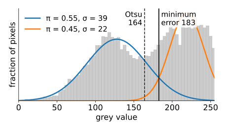
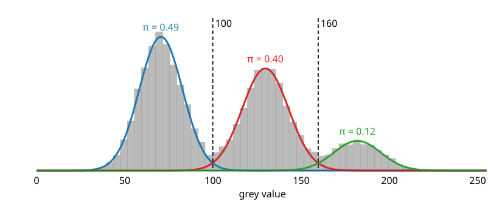
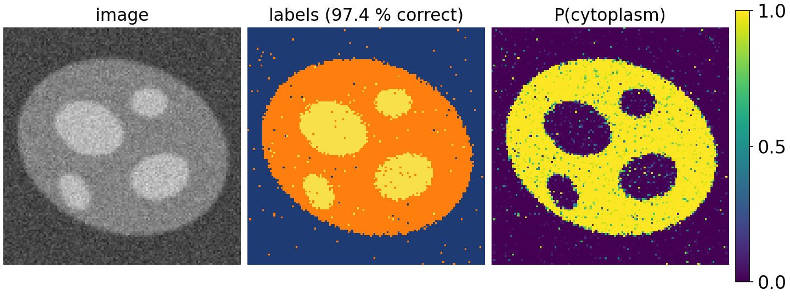
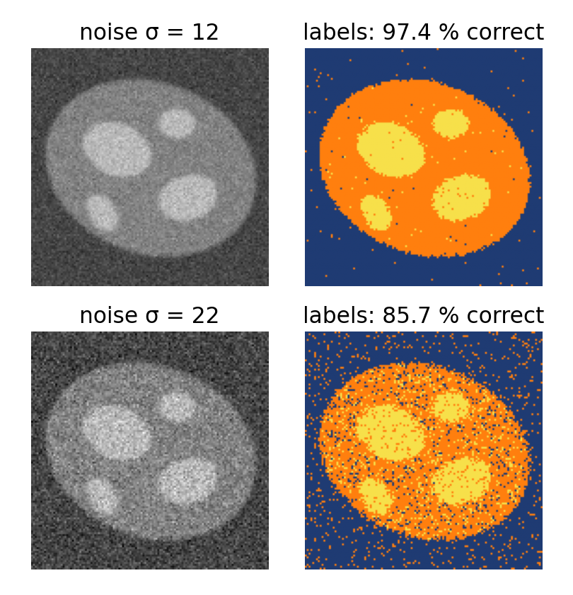
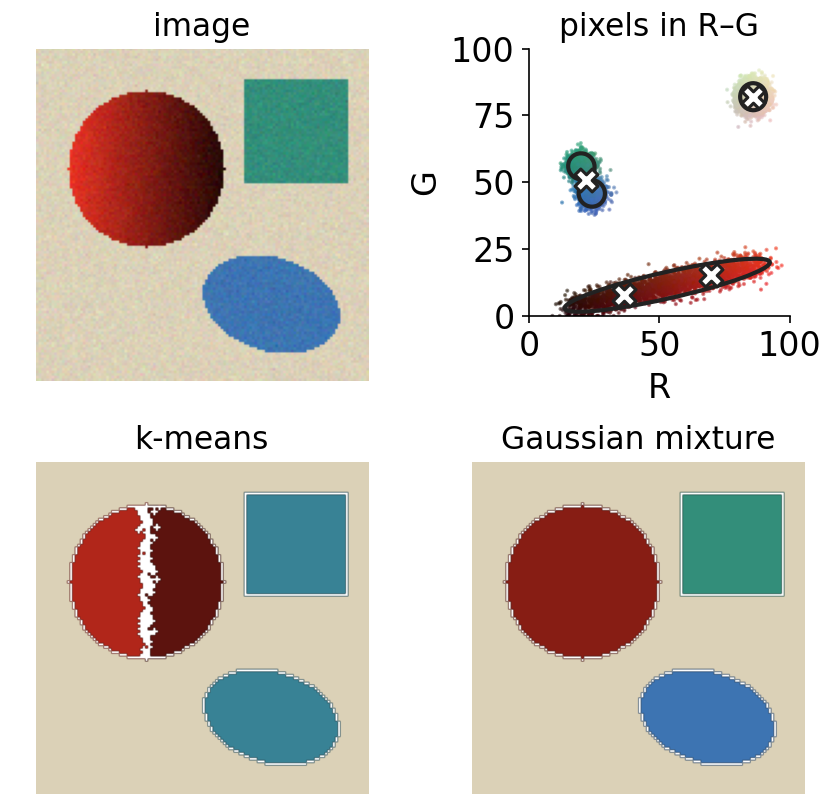
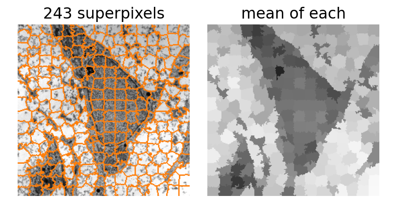
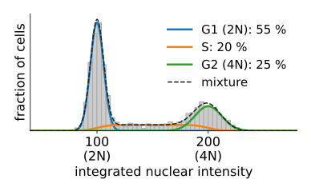
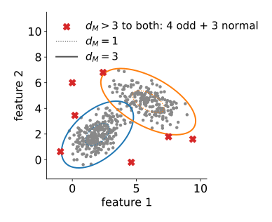

We can fit a mixture of Gaussians to any cloud of points with EM. Now the points are pixels and objects.
Grey-level mixtures: K classes from the histogram; labels and probability maps.
Colour and feature-space segmentation: why a full covariance keeps a shadowed object whole.
Populations: fractions of cells or spots from the component weights.
Anomalies: pixels or objects that no component explains.
Mixtures as the data term of a graph cut (GrabCut).
Slides titled The math give the formulas and proofs; the ideas are complete without them.
Recall: two Gaussians and a threshold
The thresholding day modelled the histogram as two Gaussians (object and background) and put the threshold where the two weighted densities cross: the minimum-error threshold (Kittler–Illingworth). It found the two Gaussians by trying every thresholdt and fitting each side separately.
Today, the same model:
with K classes instead of two;
fitted by EM: soft assignments instead of a hard split at t;
giving every pixel a probability of each class, not only a label.

The course micrograph, K = 2: the dark class is much wider, so the minimum-error boundary (183) moves towards the narrow bright class; Otsu (164) assumes equal widths. Image: Robert M. Hunt, CC BY 3.0, via Wikimedia Commons.
A mixture of grey levels

Every pixel’s grey value is a point in 1D. Fit K Gaussians with EM: each class gets a mean, a width and a weight (its share of the pixels).
EM on the histogram: pixels with the same grey value have the same responsibilities, so each of the 256 bins is one point with weight = its count. One iteration costs 256 \times K evaluations, whatever the image size.
Synthetic image above: three classes (background, cytoplasm, organelles; 49 %, 39 %, 12 % of the pixels). EM finds weights 0.49, 0.40, 0.12 and the Bayes boundaries at grey values 100 and 160.
The math: EM on a weighted histogram
Grey values g_j (bin centres) with counts h_j, n = \sum_j h_j. All pixels in bin j have the same responsibilities r_{jk}, so every sum over pixels becomes a sum over bins with weight h_j:
The result is identical to EM on all pixels (exactly, for integer grey values). For numerical safety compute \log\sum_k e^{a_k} as a_{\max} + \log\sum_k e^{a_k - a_{\max}} (log-sum-exp): a pixel far from every mean would otherwise give \log 0.
Labels, probability maps, boundaries
Label image: every pixel gets its most probable class. Because the label depends only on the grey value, it is a multi-level threshold at the Bayes boundaries.
Probability map: the responsibility of one class at every pixel, a soft segmentation. Values near 0.5 mark pixels the model cannot decide on (edges, overlapping classes).
K = 2 with free variances: the minimum-error threshold again, now found by EM.
Equal variances (tied): the boundaries are halfway between neighbouring means, shifted by the weights. Close to multi-level Otsu (thresholding day), which also assumes equally wide classes.
The weights matter: a rare class gets a smaller region; its boundary moves towards its own mean.

The math: the two-class boundary
Two classes with \sigma_1 = \sigma_2 = \sigma: the boundary \pi_1\mathcal N_1(x) = \pi_2\mathcal N_2(x) is
with two roots: the narrower class wins only between them (unit 2). Example: the synthetic image’s small bright class has \pi_3 = 0.04 against \pi_2 = 0.48: x^* = 155 + \frac{13^2}{51.5}\ln 12 \approx 163 instead of the midpoint 155.
Try it: a histogram mixture
The histogram forgets where pixels are
A label that depends only on the grey value cannot use the neighbours:
with noise, the classes overlap in the histogram and the label image is speckled (single wrong pixels everywhere);
a smooth intensity gradient (uneven illumination) shifts the classes and no single mixture fits the whole image.
Fixes that keep the mixture as the data term and add the neighbours:
graph cuts with a smoothness term (graph-cut day);
a hidden Markov random field (a Potts prior on the labels), with the mixture re-estimated by EM: the Ising elective.

Colour: a feature space with shape
A colour pixel is a point in 3D (RGB or L*a*b*). The colour day segmented colours with thresholds and distances (and one slide of k-means); a mixture adds shape.
A shadowed object is not a ball of colours: its pixels lie along a line from bright to dark (in RGB, towards black; in Lab mostly along L*).
k-means describes every group by a round blob: to cover the long shadow line it splits the object, and to make room it merges two other colours.
A full-covariance component is a long ellipse along the shadow line: the object stays whole.
More features: colour + local mean (texture), or colour + position (x, y) with a weight: groups become spatially compact regions.

Try it: colour segmentation
Relatives: mean shift and superpixels
Mean shift: put a small Gaussian on every point (a kernel density estimate); move every point uphill to the nearest peak of the density. Points that reach the same peak form a group. K is not chosen; the kernel width is.
SLIC superpixels: k-means on (colour, x, y) with many small groups (K in the hundreds), each centre searching only a local window. The result is an over-segmentation into compact, colour-coherent patches.
Superpixels make later steps cheaper: a graph cut on 500 superpixels instead of 250 000 pixels.

SLIC on the 256 × 256 micrograph: 243 superpixels. Image: Robert M. Hunt, CC BY 3.0, via Wikimedia Commons.
Populations: counting by mixture weights
The points are objects now (one point per nucleus or spot), with features from the measurements day.
DNA content (integrated nuclear intensity): cells in G1 have one copy (2N), in G2 two copies (4N), in S phase something in between. The histogram is a mixture of a G1 peak, a G2 peak at twice the intensity, and an S-phase plateau. The fitted weights are the fractions of cells in each phase.
Spot brightness: a spot holds 1, 2 or 3 fluorophores, so its intensity is a mixture of peaks at 1×, 2×, 3× the single-molecule brightness. The weights count the molecules.
Constraints help: tie the G2 mean to twice the G1 mean, or the spot means to multiples of one brightness. EM still works (the M-step changes).

Synthetic cells; the weights of the components are the phase fractions.
Anomalies: what no component explains
Fit a mixture to “normal” pixels or objects. A new point is an anomaly when
its density p(\mathbf x) is below a threshold \tau, or
its Mahalanobis distance is above (say) 3 to every component.
Examples: dust or debris in a field of cells, an out-of-focus object, a rare cell type, a stain artefact.
Unlike a classifier, this needs no examples of the anomalies: it only knows what normal looks like.
The threshold is a trade-off: for a Gaussian in 3D, 1 normal point in 150 lies beyond d_M = 3.5 anyway (1 in 34 beyond 3, 1 in 6600 beyond 4.5).
The VAE day uses the reconstruction error of an autoencoder for the same purpose.

Synthetic 2D data: the four odd points are flagged, and so are 3 of the 500 normal points (in 2D, 1.1 % of a Gaussian lies beyond d_M = 3).
Try it: an odd object
Mixtures as data terms: GrabCut
The graph-cut day’s energy needs a data termD_p(\ell) = -\log P(I_p \mid \ell): how well pixel p’s value fits label \ell. A fitted mixture per label provides it.
GrabCut (Rother, Kolmogorov & Blake, 2004), for colour images:
The user draws a box: outside = background, inside = unknown.
Fit a colour mixture (about 5 components) to the background pixels and one to the current object pixels.
Graph cut with these data terms and contrast-sensitive smoothness.
Refit the mixtures to the new labels; cut again; repeat until it settles.
The same loop as EM: a labelling step and a model-fitting step, alternating.
Summary
Histogram mixtures: EM on the bins, weighted by their counts; K classes, labels = multi-level thresholds at the Bayes boundaries; responsibilities = probability maps.
K = 2: the minimum-error threshold; equal variances: close to multi-level Otsu; weights move the boundaries.